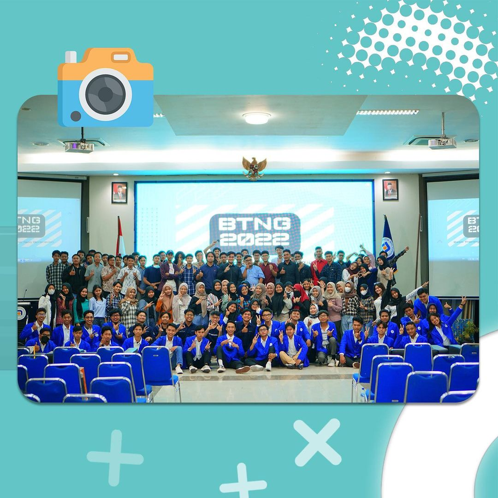
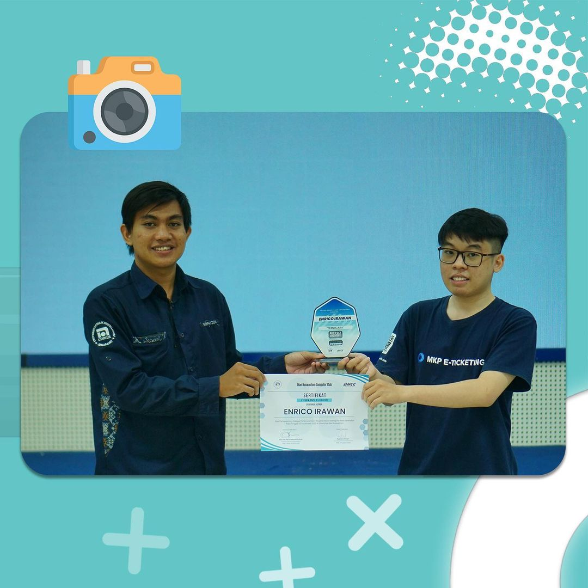
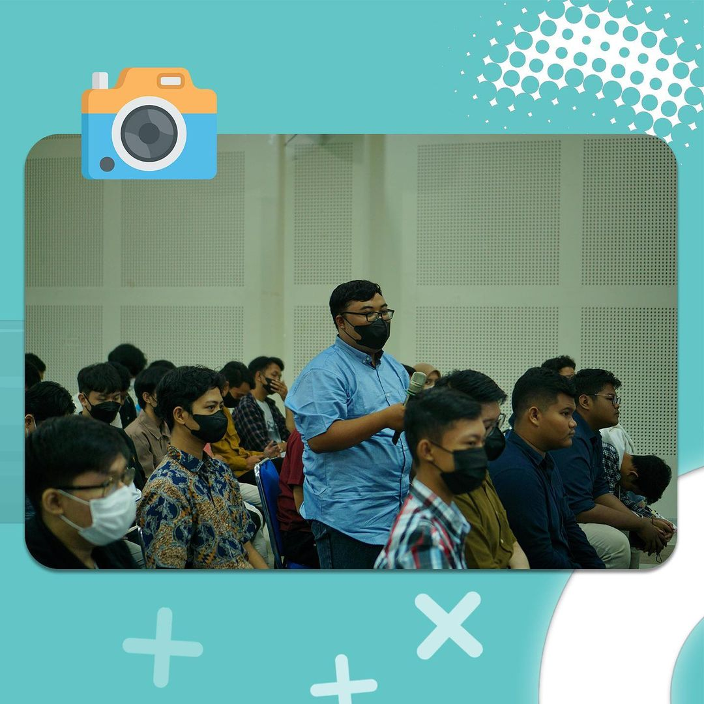

Apa itu BTNG???
BTNG adalah acara DNCC sebagai gerbang awal bagi mahasiswa yang ingin menjadi anggota di UKM DNCC. Acara yang diketuai oleh Piyoma Andika terebut ternyata menuai kesuksesan sangat besar, hal tersebut terbukti ketika acara dimulai hingga selesai semua berjalan lancar hingga tidak ada kendala apa pun. Acara BTNG sendiri telah diikuti oleh 200 mahasiswa dari berbagai fakultas.
Seperti apa kegiatan BTNG???
“Event BTNG ini berisikan acara pengenalan-pengenalan perdevisi jadi nantinya ketika calon anggota DNCC yang telah mendaftar itu minimal wajib mengambil satu devisi diantara enam devisi yang ada di UKM DNCC terus nanti juga bisa tanya-tanya tentang seluk – beluk devisi tersebut ke senior” ucap Piyoma. Dengan adanya acara BTNG ini panitia DNCC berharap bahwa peminatan bagi calon anggota baru sudah terbentuk dan mereka telah mengenal apa saja devisi yang ada sehingga ketika adanya pelatihan DNCC mereka telah paham tentang minat dan bakat mereka. Tidak hanya satu peminatan namun DNCC juga memperbolehkan satu anggota untuk memilih lebih dari satu devisi yang ada asalkan mereka dapat mengatur waktu dan jadwal kuliah maupun latihan.
Acara yang bertempat disekitar kampus Udinus ini membawa tema Larutkan Perbedaan, Reaksikan Kebersamaan, Hasilkan Persaudaraan yang diambil dari slogan DNCC sendiri. Piyoma bekerja sama dengan Zidni Irfan selaku ketua umum DNCC periode 2022/2023. Mereka bekerja sama dan bertukar pengalaman satu sama lain. BTNG diselenggarakan pada tanggal 28 September 2022. “Harapan saya setelah adanya BTNG ini semoga DNCC bisa lebih mandiri,berani berkarya dalam bidang IT khususnya,dan bisa menjadi wadah utama mahasiswa UDINUS untuk mengembangkan minat dan bakat mereka di bidang IT” ungkap Irfan selaku ketua umum DNCC.
